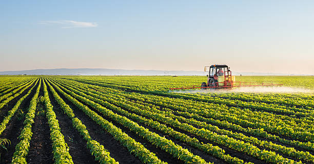
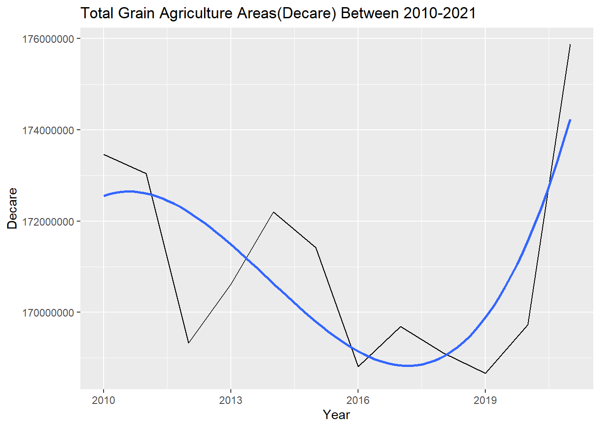
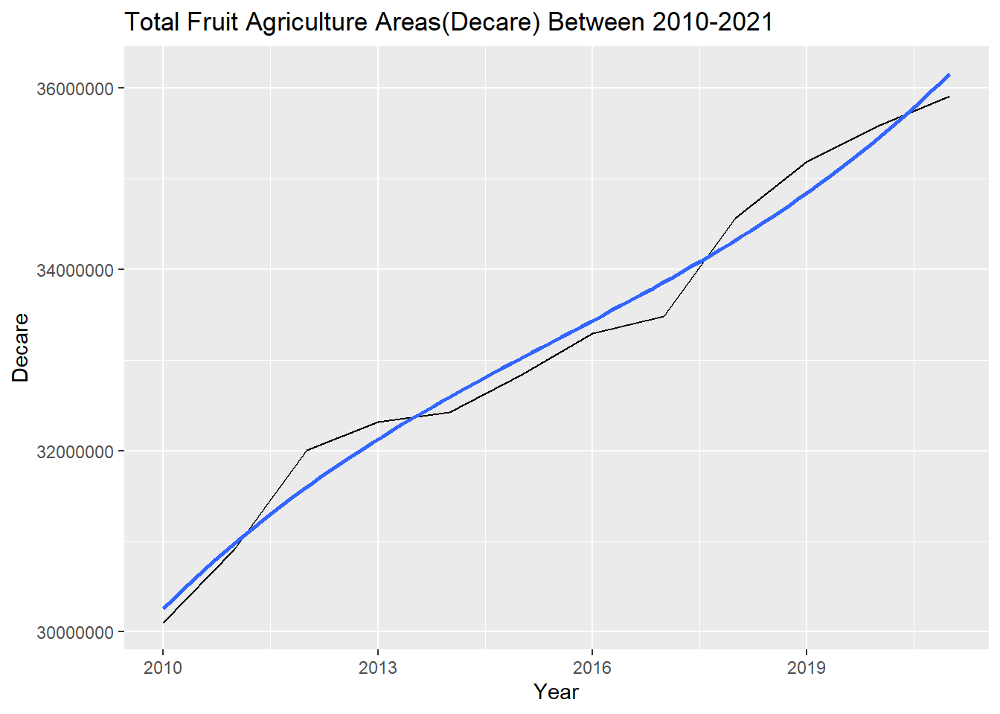
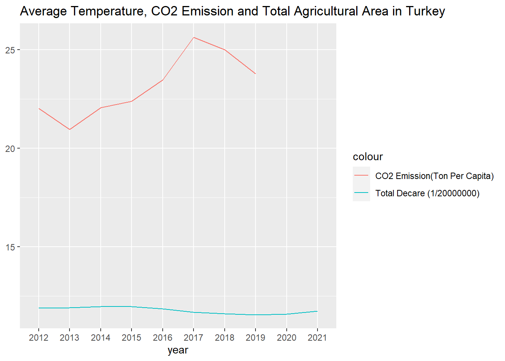

BUSINESS PROBLEM
Agricultural production plays a key role in the independence and development of a country. In this project, we aim to analyze the changes in our agricultural production areas and products over the years and obtain output in Turkey.
DATA DESCRIPTION
Data is gathered from TUIK Agriculture Data
There are various different types of Agriculture data in TUIK. Datasets that we will use are:
- 12-year agricultural area by province
- 12-year grain production by province
- 12-year vegetable production by province
- 12-year fruit production by province
The raw data is preprocessed in Data Preprocessing File
KEY TAKEAWAYS
Key takeaways of the report as follows;
1. In Turkey, 9.213.278 decare agricultural areas is lost in last 12 years. However, after 2019 agricultural areas start to increase, interestingly first improvement is in 2020, “the pandemic year” but in general in 12 years, size of the agricultural areas moving downwards.
2. When we look at provinces of Turkey, Şanlıurfa (2.145.906), Konya(2.058.950) and Sivass(1.771.190) lost biggest agricultural areas.In terms of lost rate, Zonguldak has the greatest lost, the city lost %35 of its agricultural areas in 12 years.
3. When we look at regions of Turkey, İç Anadolu had the biggest loses in 2011 and 2017. However İç Anadolu’ total agricultural lands also high as compared to other regions so looking rate of yearly difference would be good indicator to analyze. Eastern part of the Turkey loss agricultural land at the highest rate in the first years of decade, “Büyüksehir Yasası” that enacted in the 2012 can be cause of this situation
4. Distribution of Agricultural Areas in terms of fruit, vegetables and grain is examined. Only first 10 category is displayed, after 10th rank other categories are merged into “Other” category.
In fruit category, Hazelnut (%20.6) has the biggest area, second is Olive (For Oil Production), third is Pistachios
In vegetable category, Tomato (%13.1) has the biggest area, second is pumpkin seeds (10.6%), third is Watermelon (8.93%)
In grain category, Wheat (%33.8) has the biggest area, second is Barley (18.3%)
5. Yearly Grain/Fruit/Vegetable Production Areas is examined; we find that, increase in the agricultural areas after 2019 due to fruit (mostly nuts) and grain production.
6. Next, we analyze, climate Indicators and changes in agricultural areas. Increase in average temperature in Turkey in 2018, also coincides with the decrease in Agricultural area in that year. We Note that we need further statistical tests to show the relation between, this presentations only shows the raw data. However, we know that higher temperatures can lead to more frequent and severe droughts, which can reduce crop yields and increase the risk of wildfires and decrease the agricultural areas.
- The Intergovernmental Panel on Climate Change (IPCC) is an international body that assesses the science related to climate change. The IPCC’s Fifth Assessment Report, which was published in 2013, includes a chapter on “Agriculture, Forestry and Other Land Use,” which discusses the impacts of climate change on agriculture. You can find the report here: https://www.ipcc.ch/report/ar5/wg2/
7. We could not observe a clear relation between CO2 emission and agricultural area loss in Turkey. We find out that there is a complex relationship between agricultural loss and CO2 emissions. On the one hand, agriculture is a significant contributor to global CO2 emissions, through activities such as the use of fossil fuels for irrigation and transportation, and the cultivation of livestock. Reducing CO2 emissions from agriculture can help mitigate the impacts of climate change and reduce the risk of agricultural loss.
- The Intergovernmental Panel on Climate Change (IPCC) is an international body that assesses the science related to climate change. The IPCC’s Fifth Assessment Report, which was published in 2013, includes a chapter on “Agriculture, Forestry and Other Land Use,” which discusses the impacts of climate change on agriculture, including the relationship between CO2 emissions and agricultural loss. You can find the report here: https://www.ipcc.ch/report/ar5/wg2/
8. Lastly, we look at the most efficient fruit in Turkey, apple is the winner first by far in terms of kg per tree, for 12 years.
Code
#install.packages("readxl")
#install.packages("ggrepel")
#install.packages("plotly")
library(plotly)
library(readxl)
library(lubridate)
library(dplyr)
library(tidyverse)
library(ggplot2)
library(tidyr)
library(ggrepel)Code
# Prepare data
tarim <- readRDS("data//tarim.rds")
meyve <- readRDS("data//meyve.rds")
sebze <- readRDS("data//sebze.rds")
tahil <- readRDS("data//tahil.rds")
regions <- readRDS("data//Regions.rds")Total Agriculture Areas
Agriculture areas are shrinking slightly
Code
df <- tarim %>%
group_by(year) %>%
summarise(TotalAgricultureDecare=sum(decare)) %>%
arrange(year) %>%
mutate(prev=lag(TotalAgricultureDecare)) %>%
mutate(diff =TotalAgricultureDecare-prev ) %>%
mutate(totalloss= sum(diff, na.rm=TRUE))
knitr::kable(head(df),caption = "Total Agricultural Area Loss 2010-2021")| year | TotalAgricultureDecare | prev | diff | totalloss |
|---|---|---|---|---|
| 2010 | 243942052 | NA | NA | -9213278 |
| 2011 | 236137614 | 243942052 | -7804437.7 | -9213278 |
| 2012 | 237819993 | 236137614 | 1682378.9 | -9213278 |
| 2013 | 238055119 | 237819993 | 235126.2 | -9213278 |
| 2014 | 239407138 | 238055119 | 1352018.4 | -9213278 |
| 2015 | 239336141 | 239407138 | -70996.6 | -9213278 |
Code
ggplot(data=df, aes(x=year, y=TotalAgricultureDecare)) +
geom_line() +
ylim(220000000,max(df$TotalAgricultureDecare))+
ggtitle("Agricultural Areas Between 2010-2021 in Turkey")+
ylab("Agricultural Area (Decare)")+
xlab("Year")
Between 2010-2011, biggest agricultural area lost is happened. In 2011-2015, it seems to be good years for Agriculture in terms of magnitude of the areas. However, after 2015, general trend moves towards to losing the Agricultural areas, after 2019 there seems to be first improvement, interestingly first improvement is in 2020, “the pandemic year” but in general in 12 years, size of the agricultural areas moving downwards.
Yearly agriculture Areas
By Province
Code
df_1 <- tarim %>%
arrange(province, year) %>%
group_by(province) %>%
mutate(prev_decare = lag(decare)) %>%
ungroup()If we look at year by year lost, the biggest lost was in Sivas, 2011 with 2.290.480 decare loss. Second is Kars with 1.628.918, third is Konya with 1.526.849. However, Konya’s total agriculture areas are greater than others. Rate of yearly difference and decare will be another indicator.
Code
df_1 <- df_1 %>%
mutate(difference = (decare-prev_decare))%>%
arrange(desc(-1*difference))
head(df_1)# A tibble: 6 × 6
province province_code year decare prev_decare difference
<chr> <chr> <dbl> <dbl> <dbl> <dbl>
1 Sivas 58 2011 7298275 9588755 -2290480
2 Kars 36 2013 2118640 3747558 -1628918
3 Konya 42 2011 19242360 20769209 -1526849
4 Şanlıurfa 63 2011 11444392. 12591457 -1147065.
5 Yozgat 66 2013 5991422 6985982 -994560
6 Konya 42 2017 18854582 19636340. -781758.If we sort according to rate of difference Ardahan,2014 is the first with 0.79, Kars,2013 and Karabük,2018 are the second and Third in terms of yearly agriculture area lost.
Code
df_1 <- df_1 %>%
mutate(difference_rate = round(difference/decare,2))%>%
arrange((difference_rate))
head(df_1)# A tibble: 6 × 7
province province_code year decare prev_decare difference difference_rate
<chr> <chr> <dbl> <dbl> <dbl> <dbl> <dbl>
1 Ardahan 75 2014 329525 588632 -259107 -0.79
2 Kars 36 2013 2118640 3747558 -1628918 -0.77
3 Karabük 78 2018 337488 498499 -161011 -0.48
4 Osmaniye 80 2011 1153635 1664382 -510747 -0.44
5 Sivas 58 2011 7298275 9588755 -2290480 -0.31
6 Kocaeli 41 2018 786927 974696 -187769 -0.24Interestingly, yearly loss is greater in the first half of the decade, but overall loss is increasing year by year, let’s visualise this by adding cumulative loss column.
If we look at total lost, Şanlıurda, Konya ans Sivas are the three big cities
Code
df_p <- df_1 %>%
group_by(province) %>%
summarise('TotalDifference'=sum(difference, na.rm=TRUE),'TotalRate'=sum(difference_rate, na.rm=TRUE)) %>%
arrange(TotalDifference)
knitr::kable(head(df_p),caption = "Total Agriculture Lost Areas by Province 2010-2021")| province | TotalDifference | TotalRate |
|---|---|---|
| Şanlıurfa | -2145906 | -0.19 |
| Konya | -2058950 | -0.11 |
| Sivas | -1771190 | -0.26 |
| Yozgat | -1191803 | -0.19 |
| Kırşehir | -712105 | -0.23 |
| Çorum | -679593 | -0.12 |
Code
df_p <- df_p %>%
arrange(TotalDifference) %>%
mutate(TotalDifference=TotalDifference*-1)
ggplot(data=head(df_p,10), aes(x=province, y=TotalDifference)) +
geom_bar(position="dodge",stat="identity") +
ggtitle("Total Agriculture Area Loss by Province 2010-2021 - Top 10 Province") +
theme(text = element_text(size = 10),element_line(size =15),axis.text.x = element_text(angle = 90))+
xlab("Province") +
ylab("Lost Agricultural Area (Decare)") 
Zonguldak lost 35% of its agricultural areas in 12 years
Code
df_2010 <- df_1 %>%
filter(year == 2010) %>%
select(province,year,decare)
df_2021 <- df_1 %>%
filter(year == 2021) %>%
select(province,year,decare)
df_join <- inner_join(df_2010,df_2021, by = "province")
df_ttrate <- df_join %>%
mutate(totaldiffrate = 100*(decare.y-decare.x)/decare.x) %>%
arrange((totaldiffrate)) %>%
select (province,totaldiffrate )
knitr::kable(head(df_ttrate),caption = "Total Agricultural Area Loss Rate by Province 2010-2021")| province | totaldiffrate |
|---|---|
| Zonguldak | -34.97663 |
| Batman | -26.32009 |
| Osmaniye | -25.91478 |
| Bartın | -21.38318 |
| Sivas | -18.47153 |
| Yalova | -18.26819 |
Code
ggplot(head(df_ttrate,10), aes(x=province, y=-1*totaldiffrate)) +
geom_bar(position="dodge",stat="identity") +
ggtitle("Total Agriculture Area Loss Rate by Province 2010-2021 (Top 10 Province)") +
theme(axis.text.x = element_text(angle = 90)) +
ylab("Agricultural Area Loss Rate(%)")+
xlab("Province")
By Region
Code
df_r<- merge(x=tarim,y=regions,by="province",all.x = TRUE)
df_region<- df_r%>% select(region,year,decare) %>%
group_by(region,year) %>%
summarise(Total_Agriarea_in_the_Region=sum(decare))Code
df_region_1<- df_region %>%
arrange(region,year) %>%
group_by(region) %>%
mutate(prev_decare= lag(Total_Agriarea_in_the_Region)) %>%
ungroup()When we look at year by year agricultural area lost within regions of Turkey, “İç Anadolu” had the biggest loses in 2011 and 2017. However İç Anadolu’ total agricultural lands also high as compared to other regions so looking rate of yearly difference would be good indicator to analyze.
Code
df_region_1 <- df_region_1 %>%
mutate(difference=(Total_Agriarea_in_the_Region-prev_decare)) %>%
arrange((desc(-1*difference)))
df_region_1# A tibble: 84 × 5
region year Total_Agriarea_in_the_Region prev_d…¹ diffe…²
<chr> <dbl> <dbl> <dbl> <dbl>
1 İç Anadolu Bölgesi 2011 78302580. 8.14e7 -3.09e6
2 İç Anadolu Bölgesi 2017 77860586. 8.02e7 -2.33e6
3 Güneydoğu Anadolu Bölgesi 2011 30283342. 3.21e7 -1.84e6
4 Doğu Anadolu Bölgesi 2013 24865102. 2.67e7 -1.80e6
5 Marmara Bölgesi 2011 23099178. 2.40e7 -9.03e5
6 Ege Bölgesi 2011 27523248. 2.84e7 -8.74e5
7 Güneydoğu Anadolu Bölgesi 2016 30263398 3.11e7 -8.46e5
8 Akdeniz Bölgesi 2011 23881021. 2.46e7 -7.67e5
9 Akdeniz Bölgesi 2012 23179936. 2.39e7 -7.01e5
10 Güneydoğu Anadolu Bölgesi 2017 29666365 3.03e7 -5.97e5
# … with 74 more rows, and abbreviated variable names ¹prev_decare, ²differenceEastern part of the Turkey loss agricultural land at the highest rate in the first years of decade, “Büyüksehir Yasası” that enacted in the 2012 can be cause of this situation.
Code
df_region_1 <- df_region_1 %>%
mutate(difference_rate=round(difference/Total_Agriarea_in_the_Region,2)) %>%
arrange((difference_rate))
head(df_region_1)# A tibble: 6 × 6
region year Total_Agriarea_in_th…¹ prev_…² diffe…³ diffe…⁴
<chr> <dbl> <dbl> <dbl> <dbl> <dbl>
1 Doğu Anadolu Bölgesi 2013 24865102. 2.67e7 -1.80e6 -0.07
2 Güneydoğu Anadolu Bölgesi 2011 30283342. 3.21e7 -1.84e6 -0.06
3 İç Anadolu Bölgesi 2011 78302580. 8.14e7 -3.09e6 -0.04
4 Marmara Bölgesi 2011 23099178. 2.40e7 -9.03e5 -0.04
5 İç Anadolu Bölgesi 2017 77860586. 8.02e7 -2.33e6 -0.03
6 Ege Bölgesi 2011 27523248. 2.84e7 -8.74e5 -0.03
# … with abbreviated variable names ¹Total_Agriarea_in_the_Region,
# ²prev_decare, ³difference, ⁴difference_rateLet’s look at the overall lose between 2010-2021 by region.In this case some regions interestingly increase their agricultural lands
Code
df_region_overall <- df_region_1 %>%
group_by(region) %>%
summarise("Total_Difference"=sum(difference,na.rm=TRUE),"Total_Rate"=sum(difference_rate,na.rm = TRUE)) %>% arrange(Total_Rate)
knitr::kable(df_region_overall,caption = "Total Agriculre Lost Areas by Region 2010-2021")| region | Total_Difference | Total_Rate |
|---|---|---|
| Güneydoğu Anadolu Bölgesi | -3003875.0 | -0.12 |
| Akdeniz Bölgesi | -2254601.0 | -0.09 |
| İç Anadolu Bölgesi | -4191358.8 | -0.05 |
| Ege Bölgesi | -432585.9 | -0.02 |
| Karadeniz Bölgesi | -557447.5 | -0.01 |
| Marmara Bölgesi | 104406.2 | 0.01 |
| Doğu Anadolu Bölgesi | 1122184.3 | 0.02 |
Visualization…
Code
ggplot(data=df_region_overall,aes(x=region,y=Total_Difference,fill=region))+
geom_bar(position = "dodge",stat="identity")+
ggtitle("Total Agriculture Area Loss by Region 2010-2021")+
theme(text = element_text(size=10),element_line(size=15),axis.text.x=element_text(angle=90))+
xlab("Region")+
ylab("Total Difference")
Distribution of Agricultural Production
Fruits
Code
meyve_dekar <-
meyve %>%
filter(year==2021 & unit=='Dekar')
total = sum(meyve_dekar[, 'production'],na.rm=TRUE)
grouped_data <- meyve_dekar %>%
group_by(product_name) %>%
summarise(TotalbyName = sum(production,na.rm=TRUE)) %>%
mutate(rate = round((TotalbyName/total)*100,4))
plot_data <- grouped_data %>%
mutate(rank = rank(-TotalbyName),
product_name = ifelse(rank <= 10, product_name, 'Other'))Code
p <- plot_ly(plot_data, labels = ~product_name, values = ~TotalbyName, type = 'pie',textposition = 'outside',textinfo = 'label+percent') %>%
layout(title = 'Top 10 Fruit Products (in Decare) in Turkey in 2021',
xaxis = list(showgrid = FALSE, zeroline = FALSE, showticklabels = FALSE),
yaxis = list(showgrid = FALSE, zeroline = FALSE, showticklabels = FALSE))
pVegetables
Code
sebze_df <- sebze %>%
filter(year==2021 & unit=='Dekar')
total = sum(sebze_df [, 'decare'],na.rm=TRUE)
grouped_data <- sebze %>%
filter(year==2021 & unit=='Dekar') %>%
group_by(product_name) %>%
summarise(TotalbyName = sum(decare,na.rm=TRUE)) %>%
mutate(rate = round((TotalbyName/total)*100),4)
plot_data_v <- grouped_data %>%
mutate(rank = rank(-TotalbyName),
product_name = ifelse(rank <= 10, product_name, 'Other'))Code
p <- plot_ly(plot_data_v, labels = ~product_name, values = ~TotalbyName, type = 'pie',textposition = 'outside',textinfo = 'label+percent') %>%
layout(title = 'Top 10 Vegetable Products (in Decare) in Turkey in 2021',
xaxis = list(showgrid = FALSE, zeroline = FALSE, showticklabels = FALSE),
yaxis = list(showgrid = FALSE, zeroline = FALSE, showticklabels = FALSE))
pGrain
Code
tahil_df <- tahil %>%
filter(year==2021 & unit=='Dekar')
total = sum(tahil_df[, 'decare'],na.rm=TRUE)
grouped_data <- tahil %>%
filter(year==2021 & unit=='Dekar') %>%
group_by(product_name) %>%
summarise(TotalbyName = sum(decare,na.rm=TRUE)) %>%
mutate(rate = round((TotalbyName/total)*100),2)
plot_data_g <- grouped_data %>%
mutate(rank = rank(-TotalbyName),
product_name = ifelse(rank <= 10, product_name, 'Other'))Code
p <- plot_ly(plot_data_g, labels = ~product_name, values = ~TotalbyName, type = 'pie',textposition = 'outside',textinfo = 'label+percent') %>%
layout(title = 'Top 10 Grain Products(as Decare) in Turkey in 2021',
xaxis = list(showgrid = FALSE, zeroline = FALSE, showticklabels = FALSE),
yaxis = list(showgrid = FALSE, zeroline = FALSE, showticklabels = FALSE))
pYearly Grain/Fruit/Vegetable Production Areas
Grain production areas were decreasing until 2019, after 2019, it is increasing slightly like agricultural areas
Code
df_gra <- tahil %>%
filter(unit=='Dekar') %>%
group_by(year)%>%
summarize(total_gra_decare = sum(decare, na.rm = TRUE)) %>%
mutate(prev_decare = lag(total_gra_decare)) %>%
mutate(diff_gra_rate = round((total_gra_decare-prev_decare)/total_gra_decare,2))
ggplot(data=df_gra, aes(x=year, y=total_gra_decare)) +
geom_line() +
geom_smooth(method = "lm", formula = y ~ poly(x, 3), se = FALSE) +
labs(x ="Year",y="Decare") +
ggtitle("Total Grain Agriculture Areas(Decare) Between 2010-2021")
Fruit production areas are increasing slightly unlike agricultural areas
Code
df_meyve <- meyve %>%
filter(unit=='Dekar') %>%
group_by(year)%>%
summarize(total_gra_decare = sum(production, na.rm = TRUE)) %>%
mutate(prev_decare = lag(total_gra_decare)) %>%
mutate(diff_gra_rate = round((total_gra_decare-prev_decare)/total_gra_decare,2))
ggplot(data=df_meyve, aes(x=year, y=total_gra_decare)) +
geom_line() +
geom_smooth(method = "lm", formula = y ~ poly(x, 3), se = FALSE) +
labs(x ="Year",y="Decare") +
ggtitle("Total Fruit Agriculture Areas(Decare) Between 2010-2021")
Code
meyve_sort <- meyve %>% arrange(year)
meyve_analiz <- meyve_sort %>%
filter(unit=='Dekar') %>%
group_by(year,product_name)%>%
summarize(total_decare = sum(production, na.rm = TRUE)) %>%
arrange(product_name,year) %>%
ungroup()
meyve_sort_analiz <- meyve_analiz %>%
mutate(prev_dekar=lag(total_decare)) %>%
mutate(difference_with_prev_year =total_decare-prev_dekar ) %>%
filter(year>2010) %>%
arrange(desc(difference_with_prev_year))
knitr::kable(head(meyve_sort_analiz),caption = "The Top Fruits in Terms of Yearly Increased Agricultural Areas ")| year | product_name | total_decare | prev_dekar | difference_with_prev_year |
|---|---|---|---|---|
| 2012 | Şam Fıstığı Antep Fıstığı | 2835517 | 2338368 | 497149 |
| 2018 | Yağlık Zeytinler Zeytinyağı Üretimi İçin | 6544561 | 6195707 | 348854 |
| 2011 | Fındık | 6969643 | 6678649 | 290994 |
| 2018 | Şam Fıstığı Antep Fıstığı | 3545003 | 3288041 | 256962 |
| 2019 | Sofralık Zeytinler | 2341306 | 2099722 | 241584 |
| 2016 | Şam Fıstığı Antep Fıstığı | 3134316 | 2914179 | 220137 |
Code
df_sebze <- sebze %>%
filter(unit=='Dekar') %>%
group_by(year)%>%
summarize(total_gra_decare = sum(decare, na.rm = TRUE)) %>%
mutate(prev_decare = lag(total_gra_decare)) %>%
mutate(diff_gra_rate = round((total_gra_decare-prev_decare)/total_gra_decare,2))
ggplot(data=df_sebze, aes(x=year, y=total_gra_decare)) +
geom_line() +
geom_smooth(method = "lm", formula = y ~ poly(x, 3), se = FALSE) +
labs(x ="Year",y="Decare") +
ggtitle("Total Vegetable Agriculture Areas(Decare) Between 2010-2021")
Above analysis show that, increase in the agricultural areas after 2019 due to fruit (mostly nuts) and grain production
Climate Indicators and Agrriculture Areas
In this section we will compare the yearly average temperatures with the agriculture areas. Weather data is gathered from TradingEconomics.
Code
temperature = read_excel("data//temp.xlsx")
df <- tarim %>%
group_by(year) %>%
summarise(TotalDecareNormalized=sum(decare)/ 20000000)
df_t <- df %>%
inner_join(temperature,by = "year")
ggplot(df_t, aes(year)) +
geom_line(aes(y = TotalDecareNormalized, colour = "Total Agricultural Area in Decare (1/20000000)")) +
geom_line(aes(y = temperature, colour = "Temperature")) +
ylab(NULL) +
ggtitle("Average Temperature vs Total Agricultural Area") 
Increase in average temperature in Turkey in 2018, also coincides with the decrease in Agricultural area. Note that we need further statistical tests to show the relation between, this presentations only shows the raw data. However, *there are evidences suggesting that rising temperatures due to climate change can have negative impacts on agriculture, including crop yields and the productivity of livestock.
CO2 emission is also an important metric for measuring the climate change. CO2 emissions (metric tons per capita) Carbon dioxide emissions are those stemming from the burning of fossil fuels and the manufacture of cement. They include carbon dioxide produced during consumption of solid, liquid, and gas fuels and gas flaring.
WorldBank launches the CO2 emissions (metric tons per capita) data for every country. I used WorldBank
Note that, Data consists of the CO2 emission for 2009-2019
Code
co2 = read_excel("data//co2.xlsx")
df_t$year<-as.character.Date(df_t$year)
df_t_c <- df_t %>%
inner_join(co2, by='year')
ggplot(df_t_c, aes(year)) +
geom_line(aes(y = TotalDecareNormalized, colour = "Total Decare (1/20000000)", group=1)) +
geom_line(aes(y = CO2emissions, colour = "CO2 Emission(Ton Per Capita)", group=2)) +
geom_line(aes(y = temperature, colour = "Temperature", group=3)) +
ylab(NULL) +
ggtitle("Average Temperature, CO2 Emission and Total Agricultural Area in Turkey") 
Most efficient Fruits in Turkey
Production in kg per tree is as follows, is seems Apple is the winner here too.
Code
df_e <- meyve %>%
filter(str_trim(unit)=='Kg/Meyve Veren Ağaç')%>%
group_by(product_name,unit) %>%
summarise(toplam = sum(production, na.rm = TRUE)) %>%
arrange(desc(toplam))
knitr::kable(head(df_e),caption = "Fruit Efficiency (KG % Per Tree)")| product_name | unit | toplam |
|---|---|---|
| Elma Starking | Kg/Meyve Veren Ağaç | 41119 |
| Elma Golden | Kg/Meyve Veren Ağaç | 40949 |
| Diğer Elmalar | Kg/Meyve Veren Ağaç | 33089 |
| Armut | Kg/Meyve Veren Ağaç | 31858 |
| Elma Granny Smith | Kg/Meyve Veren Ağaç | 30369 |
| Elma Amasya | Kg/Meyve Veren Ağaç | 30143 |
Let’s group all fruits containing “Elma” under the Elma.
Code
meyve_group <- meyve
meyve_group$product_name <- gsub(".*Elma.*", "Elma", meyve$product_name)
df_elma <- meyve_group %>%
filter(str_trim(unit)=='Kg/Meyve Veren Ağaç')%>%
group_by(year,product_name,unit) %>%
summarise(toplam = sum(production, na.rm = TRUE)) %>%
arrange(year,desc(toplam))
df_elma# A tibble: 453 × 4
# Groups: year, product_name [453]
year product_name unit toplam
<dbl> <chr> <chr> <dbl>
1 2010 "Elma" Kg/Meyve Veren Ağaç 16454
2 2010 "Ceviz " Kg/Meyve Veren Ağaç 2794
3 2010 "Armut " Kg/Meyve Veren Ağaç 2532
4 2010 "Ayva " Kg/Meyve Veren Ağaç 2176
5 2010 "Erik " Kg/Meyve Veren Ağaç 2167
6 2010 "Kiraz " Kg/Meyve Veren Ağaç 2126
7 2010 "Şeftali " Kg/Meyve Veren Ağaç 2040
8 2010 "Dut " Kg/Meyve Veren Ağaç 2005
9 2010 "Kayısı " Kg/Meyve Veren Ağaç 1940
10 2010 "Vişne " Kg/Meyve Veren Ağaç 1802
# … with 443 more rowsCode
ggplot(data=df_elma, aes(x=product_name, y=toplam)) +
geom_bar(position="dodge",stat="identity") +
ggtitle("Fruit Efficiency (KG % Per Tree)") +
theme(text = element_text(size = 10),element_line(size =15),axis.text.x = element_text(angle = 90))